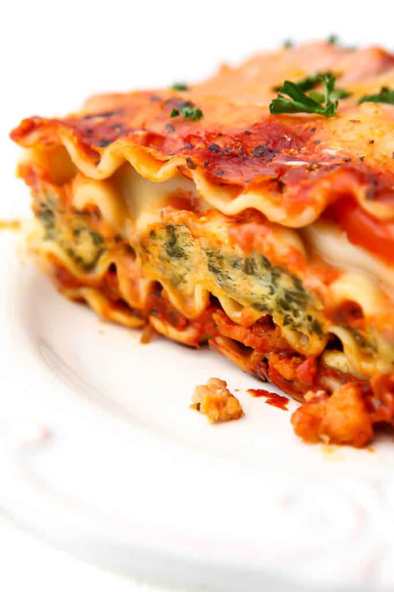

Vegan Lasagna

This lasagna taste so good you won't even miss the dead animals in it!
Ingredients
For the sauce
- 1 tablespoon olive oil
- 1/2 yellow onion diced
- 3 cloves garlic
- red pepper flakes
- 8 oz vegan Italian sausage
- 1 15-ounce can diced fire roasted tomatoes
- 1 28-ounce jar marinara
- 3 tablespoon tomato paste
- 1 tablespoon Italian seasoning
- 1/4 cup chopped parsley
For the filling
- 8 oz vegan ricotta (or blended tofu)
- 8 oz frozen spinach
- 4 oz non-dairy half & half
For the topping
- 4 oz vegan cream cheese
- 4 oz non-dairy half & half
For the lasagna
- 9-12 lasagna noodles
- parsley
Directions
- Prepare the lasagna noodles. Bring a large pot of water to a boil. Add the lasagna noodles and cook for 4 minutes, stirring regularly so they don't stick. Drain the noodles and rinse them with cold water. Transfer the noodles to a bowl of water to stop them from cooking. Place the noodles in a single layer on a parchment lined baking sheet - use 2 baking sheets if needed. Set aside.
- Place the same pot back on the stove. Heat the olive oil over medium heat. Add the onion, garlic, salt, pepper and red pepper flakes. Stir to combine and cook for 2 minutes. Add the sausage and break it apart with a wooden spoon. Cook for a couple minutes or until it begins to brown. Add a splash of water to the pot to deglaze the pan - scraping down the brown bits.
- Add the fire roasted tomatoes, marinara, tomato paste and Italian seasoning to the pot and stir to combine. Cook for at least 15 minutes, stirring frequently - you can cook this longer if you have the time. Right before assembling add the fresh parsley.
- Combine all of the filling ingredients in a bowl and stir to combine. Set aside.
- Combine the topping ingredients and mix until smooth. Set aside.
- Preheat the oven to 375 degrees. To assemble add 1 cup of the sauce to the bottom of a 9x13 baking dish. Add a layer of lasagna noodles, followed by 1.5 cups sauce and ½ of the ricotta mixture. Repeat with noodles, sauce and ricotta. For the final layer add a layer of noodles, the rest of the sauce and pour over the cream cheese mixture.
- Spray a piece of foil with non-stick spray and cover the lasagna. Bake in the oven for 30 minutes. Remove the foil and cook for an additional 10 minutes.** You can remove the lasagna now, or for an extra crispy top, turn the oven to broil. Cook for an additional 3-5 minutes until browned and bubbly on top - be sure to keep an eye on it so it doesn't burn.
- Remove from the oven and allow the lasagna to rest for 10 minutes. Cut into 8 pieces and top with fresh parsley.